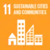
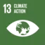

I develop low-cost multirotor drones as mobile wind-sensing platforms, estimating wind speed and direction from telemetry and attitude response, then reconstructing local wind fields with Physics-Informed Neural Networks (PINNs). In parallel, I build physics-guided forecasting systems for wind-energy integration and grid reliability, and spatio-temporal models for urban heat-risk early warning.
Current
Postdoc at GTIIT
Aerial wind sensing & PINNs
PhD 2025
Central South Univ.
Physics-informed AI
6 papers
First-author
2024–2025
3 packages
Open-source PyPI
ed-rvfl-sc · TimeMesh
Selected work in physics-informed forecasting, aerial wind sensing, and urban climate resilience.
Turning sparse, noisy field measurements into physically credible estimates — from drone-based wind sensing to grid-scale forecasting and urban climate early warning.
Low-cost multirotor drones as mobile wind-sensing platforms. Estimating wind speed and direction from telemetry, attitude response, and reference calibration during real outdoor flights.
Current GTIIT project
Physics-guided short-horizon models combining temporal learning, physical transport structure, and regime-aware correction for wind-energy integration and grid reliability.
Parallel research line
Physics-informed spatio-temporal models for urban heat-risk early warning, preserving spatial context and physical plausibility at lead times useful for intervention.
Parallel research line

SDG 11 — Sustainable Cities and Communities
SDG 13 — Climate ActionRecent updates.
Track record from embedded systems and high-throughput vision pipelines to physics-informed forecasting for energy security, climate resilience, and constrained hardware deployment.
Guangdong Technion–Israel Institute of Technology (GTIIT) · Mar 2026 – Present
I work on low-cost drone-based wind estimation and wind-field reconstruction. This research uses multirotor telemetry, reference wind measurements, and physics-informed learning to estimate ambient wind and recover local flow structure from sparse aerial observations.
The current focus is robust estimation under real flight conditions, Physics-Informed Neural Network reconstruction, cross-platform generalization, and deployable inference pipelines for field experiments and atmospheric sensing.
Central South University · Sept 2020 – Dec 2025
I design physics-informed sequence models for wind, load, and near-surface temperature forecasting, targeting grid reliability and urban thermal-stress early warning. This includes regime-adaptive focal losses, adaptive physics penalties, attention-equipped hybrid recurrent / convolutional temporal modules, and hardware-aware optimization for Jetson-class devices.
I led research end-to-end from problem formulation to publication, producing 6 first-author papers. The work aligns with a provincial Key R&D program on wind energy and grid optimization (Project 2020WK2007).
Bond and Built Pvt Ltd · Jul 2024 – Mar 2025
Built and scaled a footwear analytics pipeline handling 60+ concurrent video streams and ~50,000 daily inferences. Delivered production-grade market intelligence under real deployment and bandwidth constraints.
DLISION · May 2021 – Sept 2022
Led semantic segmentation and real-time detection pipelines. Tuned UNet variants with attention and focal loss to improve segmentation accuracy by ~3% over in-house baselines and optimized inference for deployment.
iUSE School of Engineering & IIUI · 2013 – 2020
Taught embedded systems, programming, and discrete-time signal processing. Built an Instrumentation & Measurement Lab for sensor-driven data acquisition in MATLAB. Supervised applied student projects in energy management, safety telemetry, and secure voting.
Investigated GAN-based medical diagnostics for breast cancer, with emphasis on data augmentation and robustness.
Seven years of classroom and laboratory instruction in embedded systems, signal processing, and programming.
PhD in Control Science & Machine Learning
Central South University, China
Sept 2020 – Dec 2025
MS in Electronic Engineering Gold Medalist
International Islamic University, Pakistan
Sept 2015 – Aug 2017
BS in Electronic Engineering
International Islamic University, Pakistan
Sept 2006 – Aug 2010
Production-grade Python packages for reproducible research and edge deployment.
MIT License · Python ≥3.9
Ensemble Deep Random Vector Functional Link with skip connections (edRVFL-SC). Delivers deep-ML–level accuracy without GPU training, using closed-form layer solves and feature reuse. Targets ultra-fast training and inference on CPU and embedded boards.
pip install ed-rvfl-sc
PyTorch · Temporal CNNs / LSTM / Transformer
Preprocessing and dataset tooling for time-series forecasting experiments. Sliding windows, normalization flows, train/val/test slicing, and ready-to-train tensors for LSTM, TCN, Transformer, and iTransformer-style models.
pip install timemesh
TensorFlow · Vision Transformer · Focal Loss
Transformer-based Swin-UNet segmentation stack for earth observation, medical imaging, and industrial perception. Includes attention backbones and robust Focal Loss settings for rare-structure segmentation.
pip install keras-swin-unet
I welcome research correspondence on low-cost drone-based wind estimation, PINN-based wind-field reconstruction, physics-guided energy forecasting, and climate-risk intelligence.
Guangdong Technion–Israel Institute of Technology (GTIIT), Shantou, Guangdong, China.